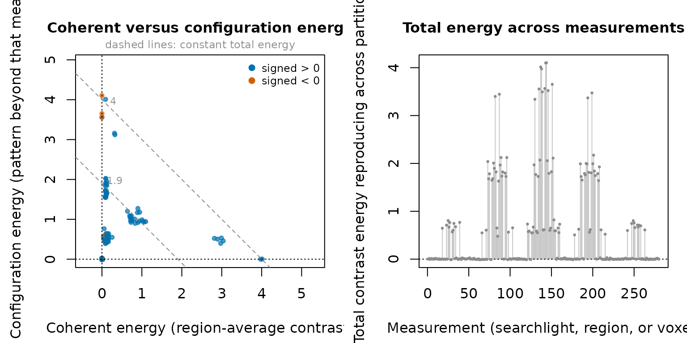

Reading contrast energies, RDMs, and uncertainty
Source:vignettes/interpreting-results.Rmd
interpreting-results.RmdThis article introduces no new statistics. It is about reading the numbers the package already returns: what each column means, three ways a reader can be misled by the coherence fraction, and how to read a map when nothing marks the right answer. Everything below runs on the generated fixture, which plants two blocks of equal amplitude at opposite ends of the volume — one whose sign alternates between neighboring voxels, one that shifts every voxel the same way — so each half of the energy decomposition has a known home.
example <- example_fmri_effects()
pairing <- cross_partitions(
example$fit$relation,
independence = "independent",
generalizes_over = "run"
)
plan <- plan_geometry(example$fit$relation, at = example$frame, over = pairing)
effect <- contrast_energy(plan, example$contrast)
peak <- which.max(effect$total)
pattern <- example$truth$pattern_measurements
mean_block <- example$truth$mean_measurements
c(
measurements = length(effect$total),
pattern_searchlights = length(pattern),
mean_searchlights = length(mean_block),
overlap = length(intersect(pattern, mean_block))
)
#> measurements pattern_searchlights mean_searchlights
#> 280 52 52
#> overlap
#> 0The two blocks are the same size and never touch the same searchlight, so every comparison below between them is a comparison of sign structure alone.
The four columns of a contrast view
head(as.data.frame(effect), 4)
#> measurement signed coherent configuration total
#> 1 1 -0.10647918 0.007018165 -6.660201e-03 0.0003579634
#> 2 2 -0.01466327 -0.002234820 1.515714e-02 0.0129223176
#> 3 3 0.05821104 0.001297404 -3.916758e-03 -0.0026193537
#> 4 4 0.01998561 -0.000585909 -6.014912e-05 -0.0006460581
#> coherence_fraction
#> 1 NA
#> 2 NA
#> 3 NA
#> 4 NA-
signedis the ordinary signed contrast of the frame-weighted mean pattern. It is a first moment: it has the units and the sign of your effect, and it is the only column that answers “which way?”. It is not crossvalidated in the reproducibility sense — it is a retained marginal. -
coherentis the crossvalidated energy carried by that frame-weighted mean pattern. It is a second moment — a squared quantity — so it is not the signed effect and not its square either. -
configurationis the crossvalidated energy in reproducible spatial departures from the weighted mean, orthogonal tocoherentunder the frame’s weights. -
totalis their exact sum.
The fixture separates the two energies by construction. Here is the strongest searchlight in each block:
strongest <- function(measurements) {
measurements[which.max(effect$total[measurements])]
}
at <- c(pattern = strongest(pattern), mean = strongest(mean_block))
block_rows <- as.data.frame(effect)[at, -1]
rownames(block_rows) <- names(at)
round(block_rows, 4)
#> signed coherent configuration total coherence_fraction
#> pattern -0.0525 -0.0007 4.1037 4.1030 NA
#> mean 2.0029 4.0109 0.0039 4.0148 0.999Equal amplitude, equal block size, near-equal total —
and opposite decompositions. The pattern block’s energy is almost all
configuration: a shape that reproduces across runs while
the sphere’s average barely moves, which is why its signed
value is close to zero and a univariate contrast would find nothing
there. The mean block’s energy is almost all coherent, and
its signed value is large, because the whole neighborhood
shifts together.
Note the NA in the first row. That searchlight is the
largest total in the map and it reports no coherence
fraction at all, because its coherent estimate landed a
hair below zero. That is the subject of the section after next.
Negatives are estimates, not errors
Each energy is a product of estimates from two different runs. Under the null its expectation is zero, so roughly half the sampling distribution lies below zero.
c(
measurements = length(effect$total),
total_below_zero = sum(effect$total < 0),
coherent_below_zero = sum(effect$coherent < 0),
configuration_below_zero = sum(effect$configuration < 0),
min_total = min(effect$total)
)
#> measurements total_below_zero coherent_below_zero
#> 280.00000000 79.00000000 95.00000000
#> configuration_below_zero min_total
#> 82.00000000 -0.01089941Do not truncate them. Clipping at zero replaces an unbiased estimator with a positively biased one, and the bias is largest exactly where there is no effect — which is where a thresholded map does its talking. If you average energies over an ROI, over participants, or over searchlights, average the signed values. The negatives are what makes the average come out at zero when nothing is there.
The coherence fraction and its validity flag
coherence_fraction is coherent / total: the
share of reproducible energy carried by the local mean rather than by
pattern shape. It is reported only where the raw components actually
form a nonnegative partition — that is, where total > 0,
coherent >= 0, and configuration >= 0.
Elsewhere it is NA, and a companion logical says why you
got NA.
c(
measurements = length(effect$total),
valid = sum(effect$coherence_fraction_valid),
na = sum(is.na(effect$coherence_fraction))
)
#> measurements valid na
#> 280 143 137
c(
total_not_positive = sum(effect$total <= 0),
coherent_negative = sum(effect$coherent < 0),
configuration_negative = sum(effect$configuration < 0)
)
#> total_not_positive coherent_negative configuration_negative
#> 79 95 82The gate is not fussiness. A ratio of two quantities that can each be
negative is not a share of anything: it can exceed 1, or be negative, or
flip sign under an arbitrarily small change in the denominator. Rather
than print such a number, the package withholds it. NA here
means “this measurement has no interpretable coherent share”, not
“missing data”.
Nor is the gate a signal detector. The peak of the pattern block
above is the strongest measurement in the entire map and it is one of
these NAs: an effect that is genuinely all configuration
has nothing left over to form a nonnegative pair with.
The three sections below are the caveats that matter once you start reporting those fractions.
Trap (a): the coherent share shrinks as the sphere grows
The coherent share falls as a searchlight grows, with no change in the underlying neural data. It is worth being exact about why, because the obvious explanation is the wrong one.
It is not dimension counting. A larger sphere does give the configuration subspace more dimensions while the coherent subspace stays one-dimensional, but these are crossvalidated energies: extra noise dimensions add variance to the configuration estimate, not expectation. A configuration remainder over pure noise is centered on zero however many dimensions it spans. Counting dimensions cannot move a share whose numerator and denominator are both unbiased.
What moves it is dilution of the weighted mean. The coherent component is the energy of the contrast carried by one average pattern, and that average runs over the whole support. Grow the sphere around a fixed block of signal and the block’s share of the weighted support falls; the weighted mean’s contrast falls with it, and the coherent energy — a squared quantity — falls with the square of that share. The configuration remainder keeps the block’s departure from a mean that is now nearly zero, so it does not fall. The ratio slides because its numerator is being averaged away.
radii <- c(2, 3, 4.5, 6)
sweep <- t(vapply(radii, function(r) {
frame_r <- compile_frame(searchlights(radius = r), example$domain)
effect_r <- contrast_energy(
plan_geometry(example$fit$relation, at = frame_r, over = pairing),
example$contrast
)
c(
median_support = median(Matrix::rowSums(frame_r$weights != 0)),
valid = sum(effect_r$coherence_fraction_valid),
median_fraction = median(effect_r$coherence_fraction, na.rm = TRUE),
pattern_block = median(effect_r$coherence_fraction[pattern], na.rm = TRUE),
mean_block = median(effect_r$coherence_fraction[mean_block], na.rm = TRUE)
)
}, numeric(5)))
data.frame(radius = radii, round(sweep, 3))
#> radius median_support valid median_fraction pattern_block mean_block
#> 1 2.0 1 138 1.000 1.000 1.000
#> 2 3.0 6 143 0.181 0.090 0.347
#> 3 4.5 14 175 0.135 0.047 0.305
#> 4 6.0 22 224 0.084 0.047 0.289The mechanism is visible directly. Hold the radius at 4.5 mm and compare, over the searchlights whose support touches the mean-shift block, the two energies against the squared weighted share of planted voxels in each support:
weighted_share <- function(frame, features) {
as.numeric(Matrix::rowSums(frame$weights[, features, drop = FALSE]) /
Matrix::rowSums(frame$weights))
}
frame_45 <- compile_frame(searchlights(radius = 4.5), example$domain)
effect_45 <- contrast_energy(
plan_geometry(example$fit$relation, at = frame_45, over = pairing),
example$contrast
)
share <- weighted_share(frame_45, example$truth$mean_features)
touching <- which(share > 0)
c(
searchlights = length(touching),
coherent = round(cor(effect_45$coherent[touching], share[touching]^2), 3),
configuration = round(
cor(effect_45$configuration[touching], share[touching]^2), 3
)
)
#> searchlights coherent configuration
#> 80.000 0.998 0.408The coherent energy is almost a deterministic function of the squared planted share. The configuration energy is not. That is dilution, not dimensionality.
At radius 2 every support is a single voxel, so the weighted mean is the pattern and the fraction is exactly 1 by construction — in both blocks. It then falls. The decomposition keeps the two blocks in the right order at every larger radius, the mean block several times above the pattern block, so the ordering is real. But the mean block’s own fraction still slides from 0.347 to 0.289 while nothing about the planted signal changes. A sentence such as “roughly 30% of the reproducible signal was carried by the mean response” is therefore a statement about your radius as much as about the brain. Report the radius and the support sizes alongside the fraction, and never compare fractions across analyses with different frames.
Trap (b): “coherent” means coherent under your weights
The decomposition is orthogonal in the frame-weighted inner product, so the weights are part of the definition. Reweighting the same voxels moves energy between the two components — and changes the total.
frame_uniform <- compile_frame(searchlights(radius = 4.5), example$domain)
# Same supports, Gaussian instead of uniform weights.
coords <- example$domain$coordinates
uniform_weights <- as.matrix(frame_uniform$weights)
centers <- match(frame_uniform$index$measurement, example$domain$feature_ids)
gaussian_weights <- uniform_weights
for (i in seq_len(nrow(uniform_weights))) {
members <- which(uniform_weights[i, ] != 0)
offsets <- coords[members, , drop = FALSE] -
matrix(coords[centers[i], ], length(members), 3, byrow = TRUE)
w <- exp(-rowSums(offsets^2) / (2 * 3^2))
gaussian_weights[i, ] <- 0
gaussian_weights[i, members] <- w / sum(w)
}
frame_gaussian <- additive_frame(
gaussian_weights, normalization = "local", domain = example$domain
)
identical(which(uniform_weights != 0), which(gaussian_weights != 0))
#> [1] TRUERead the two frames at the searchlight sitting on each block’s center. That measurement is chosen from geometry alone, not from the results, so nothing below is a selected extreme.
effect_uniform <- contrast_energy(
plan_geometry(example$fit$relation, at = frame_uniform, over = pairing),
example$contrast
)
effect_gaussian <- contrast_energy(
plan_geometry(example$fit$relation, at = frame_gaussian, over = pairing),
example$contrast
)
centered_on <- function(features) {
centroid <- colMeans(coords[features, , drop = FALSE])
which.min(rowSums(
(coords[centers, , drop = FALSE] -
matrix(centroid, length(centers), 3, byrow = TRUE))^2
))
}
middle <- c(
pattern = centered_on(example$truth$planted_features),
mean = centered_on(example$truth$mean_features)
)
reweighted <- cbind(
uniform_coherent = effect_uniform$coherent[middle],
gaussian_coherent = effect_gaussian$coherent[middle],
uniform_total = effect_uniform$total[middle],
gaussian_total = effect_gaussian$total[middle]
)
rownames(reweighted) <- names(middle)
round(reweighted, 4)
#> uniform_coherent gaussian_coherent uniform_total gaussian_total
#> pattern 0.2678 0.1320 4.0762 4.0969
#> mean 4.0671 4.0252 4.0604 4.0199Identical voxels, identical data, different numbers — but not equally different. The mean block’s coherent energy barely moves: a shift that is the same in every voxel is the same shift under any nonnegative weights. The pattern block’s coherent energy halves, because there it is not a signal at all. It is whatever failed to cancel, and how much fails to cancel is decided entirely by the weights. Both totals move.
This is not instability: each frame defines a different, well-specified estimand, and the plan records which one you asked for. It does mean that “the coherent component” is not a property of the brain region. It is a property of the region and the weights you chose to average it with — and the smaller the coherent component, the more of it belongs to the weights.
Trap (c): reported fractions are a selected sample
Because the fraction exists only where the components form a nonnegative partition, the set of measurements that report one is not a random subset of the map. The gate depends on the same quantities that appear in the ratio, so it is enriched for measurements with real signal — and, among the rest, for whichever noise realizations happened to make both components positive.
frame_small <- compile_frame(searchlights(radius = 3), example$domain)
effect_small <- contrast_energy(
plan_geometry(example$fit$relation, at = frame_small, over = pairing),
example$contrast
)
signal <- example$truth$signal_measurements
valid <- effect_small$coherence_fraction_valid
c(
signal_measurements = length(signal),
signal_reporting_a_fraction = sum(valid[signal]),
other_measurements = length(valid) - length(signal),
other_reporting_a_fraction = sum(valid[-signal])
)
#> signal_measurements signal_reporting_a_fraction
#> 104 100
#> other_measurements other_reporting_a_fraction
#> 176 43
round(c(
pattern_block = mean(valid[pattern]),
mean_block = mean(valid[mean_block]),
elsewhere = mean(valid[-signal])
), 3)
#> pattern_block mean_block elsewhere
#> 0.942 0.981 0.244
c(
share_of_map_reporting = mean(valid),
share_of_reporters_that_are_signal = mean(seq_along(valid)[valid] %in% signal)
)
#> share_of_map_reporting share_of_reporters_that_are_signal
#> 0.5107143 0.6993007Both blocks clear the gate at about the same rate, so the selection is not about which kind of effect you have; it is about having one. Under a quarter of the remaining measurements report a fraction, on noise alone. The result is that the average fraction “over the map” is really an average over a set that is 70% planted signal. That is fine if you say so, and misleading if you do not. If you want a map-wide summary, define the denominator explicitly — for instance the share of all measurements that report a coherent share at all, the first number above — rather than averaging the reported values and calling the result a property of the map.
The same warning applies to any post-hoc gate: thresholding on
total > 0 and then summarizing coherent
conditions the summary on the numerator’s sibling.
Reading a map without ground truth
Every figure so far could mark the right answer, because the fixture
carries truth$signal_measurements. Your data will not. This
section is about what the same picture tells you when nothing is
marked.
plot(effect)
The same contrast view with no highlight supplied. Nothing here identifies the two planted blocks; the reading below uses only what is on the page.
The band at zero is the noise floor, and it comes free
A crossvalidated energy is a product of estimates from two different partitions, so its expectation is zero wherever nothing reproduces. You do not have to model that floor or estimate it from a separate null run. It is already in the map, underneath your candidates, and about half of it is below the line because the negatives were kept.
quiet <- setdiff(seq_along(effect$total), example$truth$signal_measurements)
round(c(
measurements = length(quiet),
mean = mean(effect$total[quiet]),
sd = stats::sd(effect$total[quiet]),
fraction_below_zero = mean(effect$total[quiet] < 0),
largest = max(effect$total[quiet])
), 4)
#> measurements mean sd fraction_below_zero
#> 176.0000 0.0027 0.0085 0.4489
#> largest
#> 0.0297That used the truth. You can get close without it, because in a typical map the floor is the majority and a robust summary is dominated by it:
round(c(
median_over_all = stats::median(effect$total),
mad_over_all = stats::mad(effect$total),
fraction_below_zero_over_all = mean(effect$total < 0)
), 4)
#> median_over_all mad_over_all
#> 0.0088 0.0198
#> fraction_below_zero_over_all
#> 0.2821The blind median lands near the true floor’s center, and both sit under 0.3% of the peak. The blind MAD is more than twice the floor’s true spread, because 37% of these measurements carry planted signal — two blocks, not one — and inflate it. That is the right direction for a scale you are going to eyeball against, but it is a description, not an estimate of a null.
Candidates, not findings
Sorted, this map has a visible shoulder: rank 104 is
0.478 and rank 105 is 0.030, while rank 1 is
4.10. The shoulder falls exactly at the edge of the planted
set — all 104 planted searchlights outrank every other measurement. That
is a fact about this fixture, not a method.
round(sort(effect$total, decreasing = TRUE)[c(1, 10, 40, 104, 105, 150, 280)], 4)
#> [1] 4.1030 3.4728 1.7863 0.4779 0.0297 0.0067 -0.0109crossform deliberately gives you no way to turn that
shoulder into a finding. There is no threshold, no p-value, no
permutation null, no spatial random-field correction, and no group
inference; the README’s Status and scope section says
so, and the failure gallery (online,
or vignette("failure-gallery") offline) treats manufactured
uncertainty as an error to guard against. Measurements standing clear of
the floor are candidates. What you may legitimately do
with them:
- Say what kind of effect each one is. The coherent/configuration split is descriptive, not inferential, so it costs you nothing to read: a candidate high in configuration is a reproducible pattern, one far along the coherent axis is a regional mean that a univariate contrast would also have found. This map has both, at opposite ends of the volume, with the same amplitude.
-
Attach a within-measurement standard error at a measurement
you chose in advance, using
rdm_sampling_covariance()withtarget = "null"— and only if the relation kept its residual channel, which means fitting withlm_relation_fit()orestimate_relation()rather than importing betas. - Take the candidates somewhere else: a held-out session, an independent dataset, or a group-level analysis performed outside this package.
The error bar at the peak is not an error bar
One trap deserves naming, because the package makes it easy to walk
into. If you find peak <- which.max(effect$total) and
then report a standard error at peak, that interval
describes a measurement you selected because it was extreme.
The estimate is conditioned on being the largest; the standard error is
not. Every number in this article that uses peak is
illustrative for that reason, not a result.
Specify the measurement in advance, or treat the peak as a candidate and estimate it somewhere you did not select it.
Reading the RDM
peak is the pattern block’s strongest searchlight, so
the two within-category pairs should sit near zero and the four
across-category pairs near the planted separation.
distances <- rdm(plan)
distances$pairs
#> left right
#> 1 face body
#> 2 face house
#> 3 face tool
#> 4 body house
#> 5 body tool
#> 6 house tool
round(distances$values[peak, ], 3)
#> face - body face - house face - tool body - house body - tool house - tool
#> -0.004 4.078 4.334 3.881 4.124 0.009For conditions i and j, rdm() reports
d_ij = G_ii + G_jj - 2 G_ij. Under cross-partition pairing
this is a signed crossvalidated squared Euclidean
distance; with a fixed neural precision metric it is a squared
Mahalanobis distance. Three consequences:
- They are squared. Do not take square roots to “get distances back” — the square root of a negative estimate is undefined, and the square root of a noisy positive one is biased.
- They can be negative, for the same reason the energies can, and for the same reason they are kept.
-
They are not
1 - Pearson correlation. Correlation distance divides each pattern by its own norm, which is not a fixed linear operation, so it cannot be a query against this geometry. The package refuses to substitute it silently; the reasoning and the conditions under which the boundary could be crossed are in the correlation-distance policy (online, orvignette("correlation-distance-policy")offline).
Because the RDM is a geometry query and not a decomposition, it does not tell the two blocks apart. The strongest searchlight in each block returns much the same six distances, even though their energies split in opposite directions:
round(rbind(
pattern = distances$values[at[["pattern"]], ],
mean = distances$values[at[["mean"]], ]
), 3)
#> face - body face - house face - tool body - house body - tool
#> pattern -0.004 4.078 4.334 3.881 4.124
#> mean 0.005 4.147 3.960 4.055 3.887
#> house - tool
#> pattern 0.009
#> mean -0.015Only contrast_energy() separates coherent from
configuration. If the distinction matters to your question, the RDM is
not where you will find it.
Reading RSA coefficients
rsa() regresses the measured distances on your model
RDMs. It is ordinary least squares, not a rank correlation.
category <- rsa(plan, models = list(category = example$model_rdm))
colnames(category$coefficients)
#> [1] "(Intercept)" "category"
round(category$coefficients[peak, ], 4)
#> (Intercept) category
#> 0.0025 4.1017There are two columns for one model because an intercept is fitted by default. Keep it. Not because the distances need an offset removed — they are unbiased as they stand, which is the whole point of the cross-partition pairing — but because the regression has a level of its own. Every measurement has some mean signed distance across its pairs, and that mean is a property of how far apart the conditions sit there, not evidence for the shape your model RDM predicts. The intercept absorbs it as a nuisance level. Drop it and the fit is forced through the origin, so the model coefficient has to account for the mean as well as the shape, and a searchlight where everything is far from everything scores high on any model RDM with a positive mean.
no_intercept <- rsa(
plan, models = list(category = example$model_rdm), intercept = FALSE
)
c(
with_intercept = category$coefficients[peak, "category"],
without_intercept = no_intercept$coefficients[peak, "category"]
)
#> with_intercept.category without_intercept.category
#> 4.101730 4.104211Drop the intercept only when you have a reason to believe the level is meaningful and shared. Coefficients are in units of distance per unit of model RDM, so they are comparable across measurements within one analysis but not across analyses with differently scaled model RDMs.
Uncertainty: two targets, and what “refused” means
rdm_sampling_covariance() requires an explicit
target, because the two choices answer different
questions:
null_se <- sqrt(sampling_covariance(
rdm_sampling_covariance(plan, example$fit, target = "null", at = peak)
))
plugin_se <- sqrt(sampling_covariance(
rdm_sampling_covariance(plan, example$fit, target = "plugin", at = peak)
))
round(rbind(distance = distances$values[peak, ],
null = null_se, plugin = plugin_se), 4)
#> face - body face - house face - tool body - house body - tool
#> distance -0.0043 4.0781 4.3337 3.8806 4.1245
#> null 0.0142 0.0142 0.0142 0.0142 0.0142
#> plugin 0.0209 0.2377 0.2487 0.2321 0.2426
#> house - tool
#> distance 0.0092
#> null 0.0142
#> plugin 0.0266-
target = "null"evaluates the signal-dependent variance term at a fixed zero effect. It is exact on the variance scale under the declared model, and it is what you want when calibrating a test of no effect. Notice it is the same for every pair: with no signal assumed, the variance depends only on the noise. -
target = "plugin"substitutes the estimated partition-mean pattern for the unknown signal. It tracks the actual distances — large where the distance is large, and back down toward the null value for the two within-category pairs — which is what you want when reporting an error bar around a nonzero estimate. It is biased upward, by a term that shrinks like 1/M² in the number of partitions and is largest when noise dominates the true distances, so read it as mildly conservative. See?rdm_sampling_covariancefor the exact expression.
Both targets share one estimated ingredient: the residual covariance . “Exact” above means exact given that covariance — and because the noise term is quadratic in it, a raw plug-in would inflate every standard error by . crossform applies the Wishart-unbiased correction and reports the two numbers that govern it: the residual degrees of freedom , and , the number of residual directions this measurement’s support actually spends variance on.
covariance <- rdm_sampling_covariance(
plan, example$fit, target = "null", at = peak
)
c(residual_df = covariance$source$residual_df,
effective_dimension = round(
covariance$source$residual_effective_dimension, 2
))
#> residual_df effective_dimension
#> 112.00 5.88A large support bought with few runs runs out of residual information, and when falls below the call refuses rather than reporting a confidently small number.
There is no default. Choosing one silently would mean the same function reported two different quantities depending on context.
This is a within-measurement, within-participant covariance under an equal-partition, fixed-metric, separable error model. It is not a confidence interval, not a spatial random-field correction, and not group inference.
Refusal is an answer
If the relation cannot support the analytic law, the package says so with a classed condition rather than returning a plausible-looking number. Ask before provoking:
set.seed(3)
conditions <- c("a", "b", "c")
domain <- volume_domain(array(1L, c(4, 4, 3)), spacing = c(3, 3, 3))
beta_runs <- lapply(1:3, function(i) {
m <- matrix(rnorm(3 * 48), 3, 48)
rownames(m) <- conditions
m
})
names(beta_runs) <- paste0("run", 1:3)
beta_only <- relation(beta_runs, effects = effect_space(conditions),
domain = domain)
beta_plan <- plan_geometry(
beta_only,
at = compile_frame(searchlights(radius = 3), domain),
over = cross_partitions(beta_only, independence = "independent",
generalizes_over = "run")
)
sampling_capabilities(beta_plan, beta_only)
#> <effect_sampling_capabilities>
#> analytic sampling law: unavailable
#> metric: fixed | partitions: equal | error channel: absent
#> unmet requirements:
#> * missing_error_channel - this evidence plan has only a precomputed relation and no error channel. Refit raw observations with `lm_relation_fit()` or supply a validated, identity-bound external error channel; beta matrices alone cannot recover residual uncertainty
#> remedy: Refit raw observations with `lm_relation_fit()`.
#> note: requirements that describe the error channel itself cannot be
#> evaluated until one exists, and are not listed.A relation built only from precomputed beta matrices has no residuals and no residual degrees of freedom, so the analytic law is unavailable. Provoking it anyway yields a refusal you can inspect as data:
refusal <- catch_refusal(
rdm_sampling_covariance(beta_plan, beta_only, target = "null", at = 1)
)
class(refusal)
#> [1] "effect_capability_refusal" "error"
#> [3] "condition"
refusal$capability
#> [1] "sampling_covariance"
refusal$reasons
#> [1] "missing_error_channel"
refusal$remedies
#> [1] "Refit raw observations with `lm_relation_fit()`."“Refused” does not mean “not implemented”. It means the specific
claim you asked for is not supported by the evidence you supplied, and
the condition carries every unmet requirement with a concrete remedy.
The point estimates — contrast_energy(),
rdm(), rsa() — remain perfectly valid on such
a relation; only the error bar is withheld.
Summary
| Reading | Do | Do not |
|---|---|---|
| Negative energies or distances | keep and average them | truncate at zero |
signed |
read direction and units | square it and call it energy |
coherence_fraction |
report with radius and support sizes | compare across frames |
NA fraction |
read as “no interpretable share” | impute or drop silently |
| RDM values | treat as signed squared distances | take square roots, or read as 1 - r
|
| RSA coefficient | keep the intercept | compare across differently scaled models |
target = "null" |
calibrate a test of no effect | use as an error bar on a nonzero distance |
target = "plugin" |
error bar on an estimate, read as conservative | treat as exact |
| a refusal | read $reasons and $remedies
|
retry until something returns a number |
| a measurement above the floor | call it a candidate and say what kind it is | threshold it and report it as a finding |
an error bar at which.max()
|
name the measurement in advance instead | read it as uncertainty about the peak |
See also
-
vignette("introduction", package = "crossform")— the workflow these results come from. -
Correlation-distance
policy, offline
vignette("correlation-distance-policy")— whyrdm()will not give you1 - r. -
Failure gallery, offline
vignette("failure-gallery")— six realistic errors and the refusals that stop them. -
?example_fmri_effectsfor the two planted blocks, and?contrast_energy,?rdm,?rsa,?rdm_sampling_covariancefor the exact contracts.